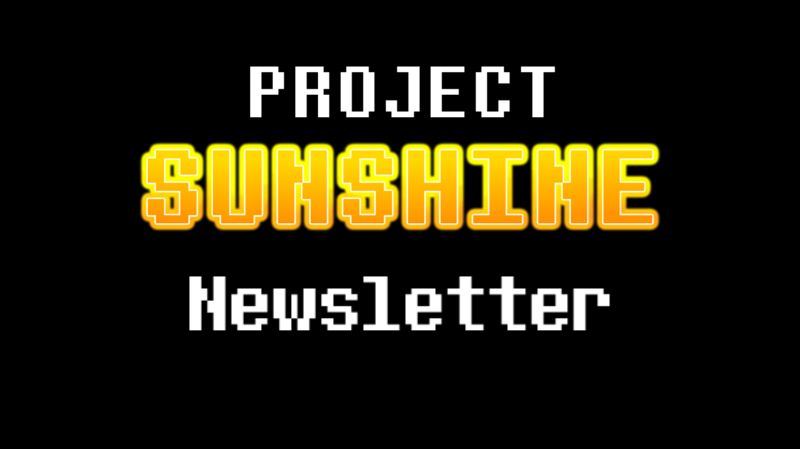
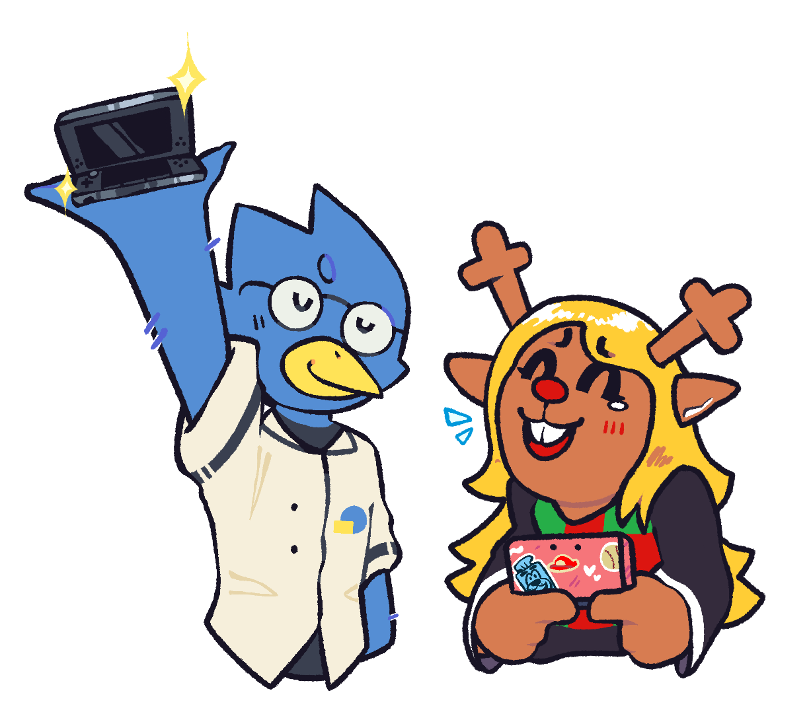

August 19th Newsletter
Howdy!
So, I said there wouldn't be any news for a bit, but uh.. I think I like making these and I'm in science class with NOTHING better to do so..

UNDERTALE 3DS
I do know the wait is very long and painful, but..
We've been working hard on it, and playtesters should be testing soon. We are a bit behind schedule and to say the least, announcing a release date was an absolute horrible idea that I will never ever in my entire life do again because of how (reasonably) mad people get when we have to (reasonably) delay it. Again as we mentioned if we aren't able to get everything fixed in terms of bugs, we may have to release during the first week of September but keep in mind I don’t think that will happen.
DELTARUNE 3DS
So we had a big brain moment and realized that we can transpile the whole game (or the heavier scripts) from GML to C for basically maximum performance which means aside from likely some certain scripts, optimization (other than some shaders and particles?) wont be the biggest issue which means Chapters 1-5 could be coming earlier than I thought it would.
Cinnamon Launcher 3DS and Wii U
Hmm, Cinnamon Launcher. Few things to note..
So, I feel like everyone should know that UNDERTALE, DELTARUNE, and UNDERTALE Yellow will not run as good as it will using the specific ports unless I decide to port over the game specific changes. Cinnamon Launcher will generally be primarily for other games such as Antonball Classic and Pizza Tower.
However..
Pizza Tower uses FMOD and the 3DS doesn’t support it, so unless I were to replace the audio system, it would not play audio. Pizza Tower is also quite the heavy game so if anything, that would have its own specific port so we can have those game specific changes and bottom screen. No promises.
Games compiled in YYC, GMRT, and games that are older than bytecode/WAD version 9 will not work.
Thank ya!
Thank you for reading! See you.. When it releases!
Casriel